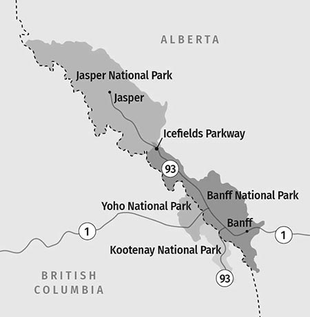

Parco delle montagne
rocciose canadesi
benvenuto
Il parco delle Montagne Rocciose canadesi è un sito riconosciuto
dall'UNESCO come patrimonio dell'umanità situato nelle Montagne
Rocciose canadesi.
Esso è costituito da un ambiente montano ricco di alti picchi, fiumi,
cascate, canyon, laghi e ghiacciai. Inoltre, all’interno della regione
si trova la cosiddetta Argillite di Burgess, un’esposizione di argillite
scura in cui furono ritrovati fossili di rilevante interesse
paleontologico.

Mappa
Il parco delle Montagne Rocciose canadesi
comprende i seguenti parchi:
- • Parco nazionale di Banff
- • Parco nazionale di Jasper
- • Parco nazionale di Yoho
- • Parco nazionale di Kootenay
- • Parco provinciale di Hamber
- • Parco provinciale Mount Assiniboine
- • Parco provinciale di Mount Robson